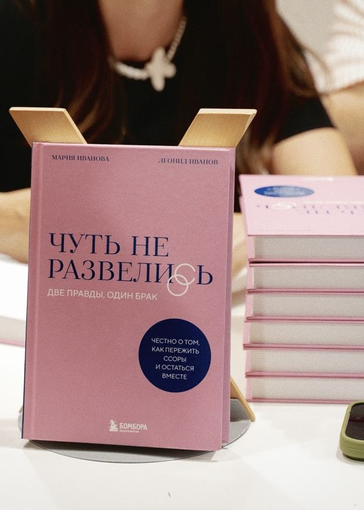
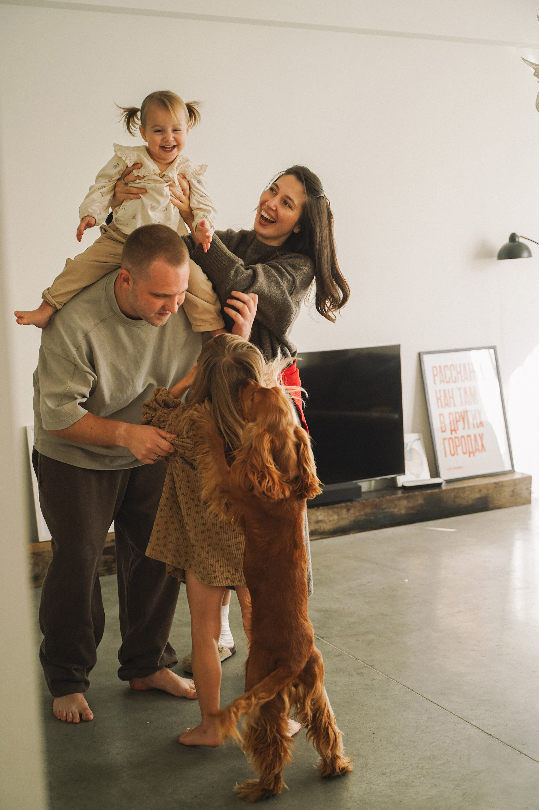
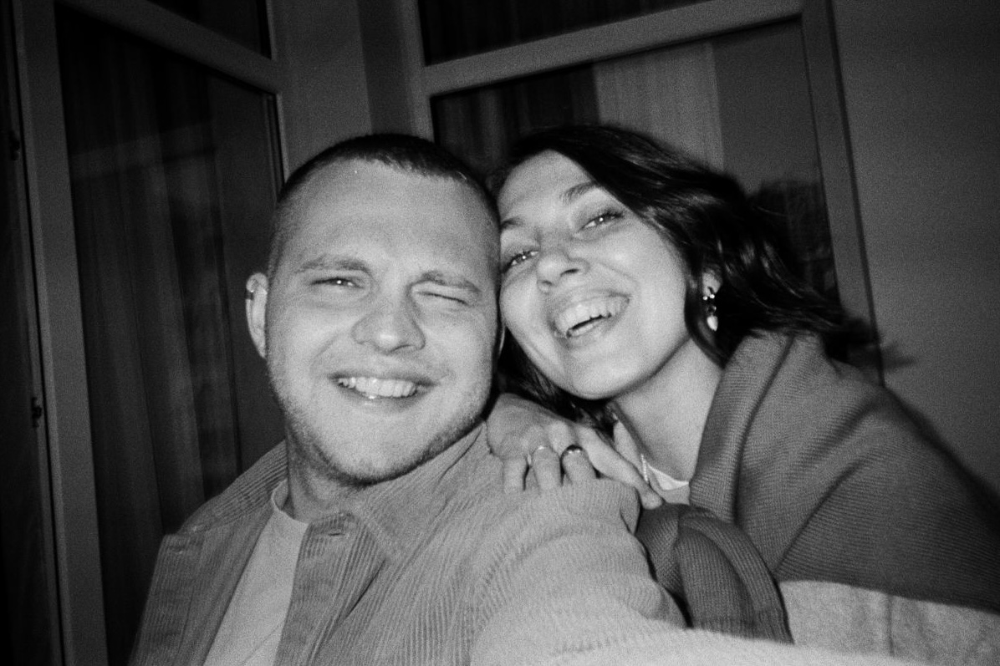

КНИГА · 2025
Чуть не
развелись
Две правды, один брак. Честно о том, как пережить ссоры и остаться вместе.
Яндекс Книги11 100 человек читают книгу

Как пройти кризис
и остаться вместе
Спустя два года работы над подкастом «Чуть не развелись» к нам пришло издательство Бомбора с предложением написать книгу о нашей истории.
В 2025 году книга вышла в свет. Она про отношения, которые живут не по сценарию романтического кино: про кризисы, расставания, возвращения друг к другу, взросление рядом и ту самую любовь — обычную любовь неидеальных людей.
Подкаст однажды нашёл отклик у тысяч слушателей, и мне очень хочется верить, что книга тоже станет для кого-то поддержкой, отражением себя или тихим разговором, который оказался вовремя.
Где купить
книгу
Печатная версия
Электронная
и аудиоверсия
Барселона
и Европа
Интервью
о книге

podcasts.ru